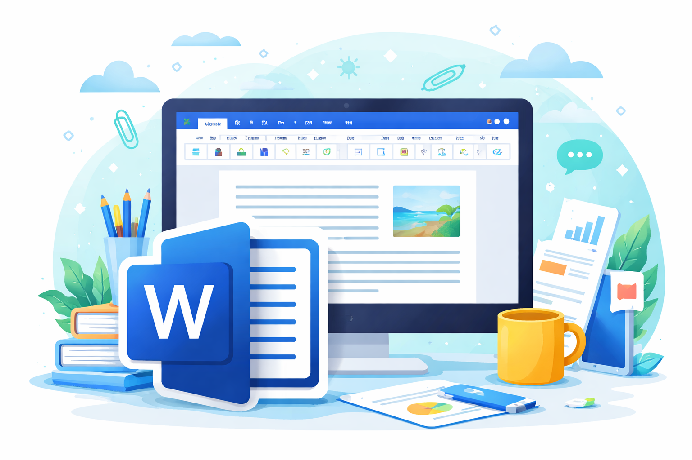
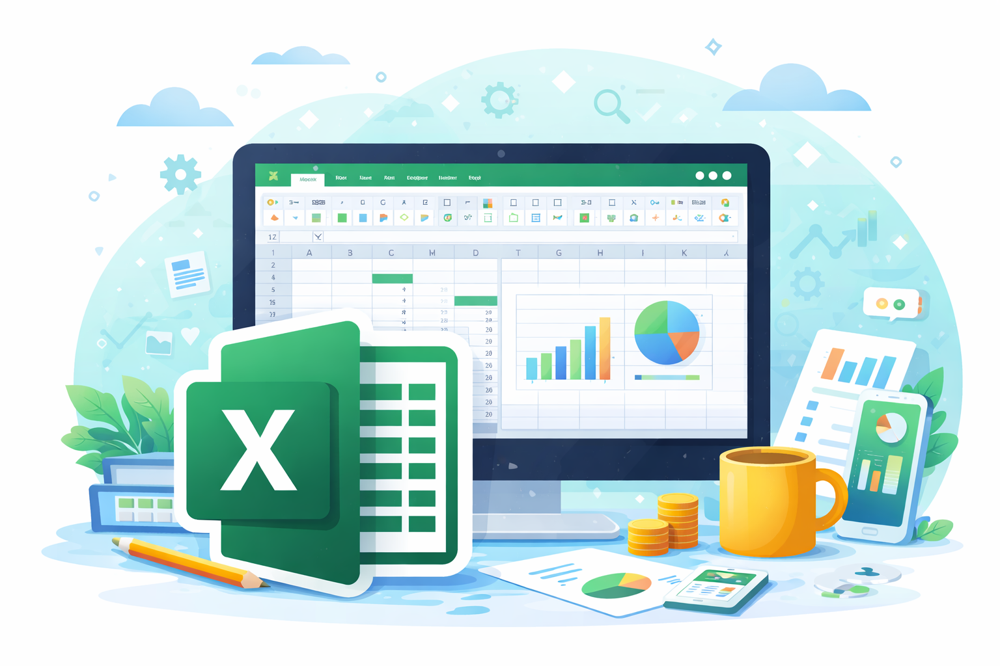
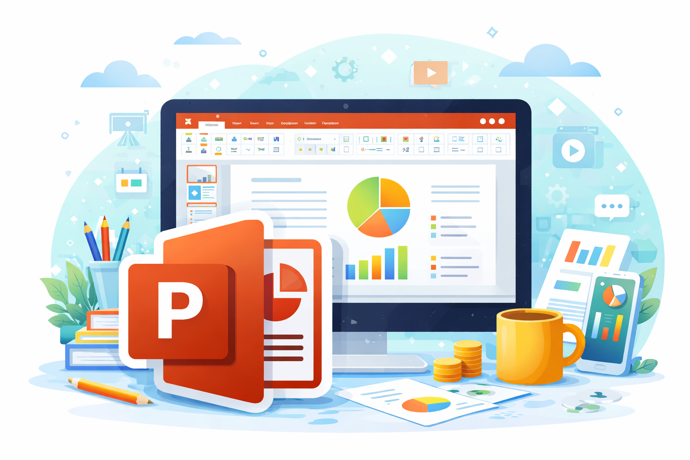

Inicio
La ofimática es un conjunto de herramientas digitales que se utilizan para realizar tareas académicas y administrativas de manera eficiente. Aplicaciones como Word, Excel y PowerPoint permiten crear documentos, organizar información, realizar cálculos y presentar contenidos de forma clara y ordenada.
El uso adecuado de estas herramientas es fundamental en el ámbito educativo, ya que facilita la elaboración de trabajos, mejora la presentación de la información y optimiza el tiempo de estudio. Además, el desarrollo de habilidades en ofimática contribuye al uso responsable de la tecnología.
El video que se presenta a continuación introduce los conceptos básicos de la ofimática y explica la función principal de las aplicaciones más utilizadas en el entorno escolar y cotidiano.
Microsoft Word
Microsoft Word es un procesador de textos que permite crear y editar documentos digitales de manera sencilla y organizada. Es una de las herramientas ofimáticas más utilizadas en el ámbito educativo y profesional para la elaboración de trabajos escritos, informes, cartas y documentos formales.
Word ofrece diversas opciones de formato que permiten mejorar la presentación de los textos, como cambiar el tipo y tamaño de letra, aplicar negrita, cursiva, subrayado y ajustar la alineación de los párrafos. También permite insertar imágenes, tablas y encabezados para estructurar mejor la información.
El uso adecuado de Microsoft Word ayuda a desarrollar habilidades de redacción, orden y presentación, facilitando la comunicación escrita y el cumplimiento de normas básicas de presentación de documentos.

Microsoft Excel
Microsoft Excel es una hoja de cálculo que permite organizar, analizar y procesar información de forma eficiente. Se utiliza principalmente para trabajar con datos numéricos, realizar cálculos automáticos y presentar resultados de manera ordenada.
Excel funciona mediante filas y columnas que forman celdas, donde se ingresan datos como números, textos o fórmulas. A través de funciones básicas como suma, promedio y resta, es posible realizar operaciones matemáticas de manera rápida y precisa. Además, permite crear gráficos que facilitan la interpretación de la información.
El uso de Microsoft Excel desarrolla el pensamiento lógico y la capacidad de análisis, ya que ayuda a manejar información de forma estructurada y a tomar decisiones basadas en datos, siendo una herramienta fundamental en el ámbito educativo y cotidiano.

PowerPoint
Microsoft PowerPoint es una herramienta de presentaciones que permite comunicar ideas de manera visual y organizada. Se utiliza para exponer temas académicos, explicar contenidos y apoyar exposiciones mediante diapositivas claras y atractivas.
PowerPoint permite crear diapositivas con texto, imágenes, gráficos y videos, así como aplicar diseños, transiciones y animaciones que facilitan la comprensión del contenido. El uso adecuado de estos elementos ayuda a captar la atención del público sin sobrecargar la información.
El manejo correcto de Microsoft PowerPoint contribuye a mejorar la comunicación oral y visual, permitiendo presentar ideas de forma estructurada y profesional tanto en el ámbito educativo como en el uso cotidiano.

Glosario de Ofimática
Ofimática
Conjunto de herramientas digitales que permiten realizar tareas de oficina, académicas y administrativas de manera eficiente.
Documento
Archivo digital que contiene información escrita, imágenes o tablas y que puede ser creado y editado en programas como Word.
Procesador de textos
Programa informático que permite redactar, editar y dar formato a textos. Ejemplo: Microsoft Word.
Hoja de cálculo
Aplicación que organiza información en filas y columnas y permite realizar cálculos automáticos. Ejemplo: Microsoft Excel.
Celda
Espacio individual dentro de una hoja de cálculo donde se ingresan datos. Se identifica por una letra y un número.
Fórmula
Operación que permite realizar cálculos automáticos en Excel, como sumas, promedios o restas.
Gráfico
Representación visual de datos que facilita su comprensión mediante barras, líneas o gráficos circulares.
Presentación
Conjunto de diapositivas utilizadas para exponer información de forma visual y ordenada. Se crea en PowerPoint.
Diapositiva
Página individual dentro de una presentación que puede incluir texto, imágenes, gráficos y videos.
Formato
Cambios visuales aplicados a un texto u objeto, como tipo de letra, tamaño, color, negrita o alineación.
Estilos
Herramienta que permite aplicar formatos predefinidos para mantener un diseño uniforme y ordenado en los documentos.
Archivo
Elemento digital donde se guarda información y que puede abrirse, editarse y almacenarse en una computadora.
Guardar
Acción que permite conservar los cambios realizados en un archivo para evitar la pérdida de información.
Interfaz
Parte visual de un programa que permite la interacción del usuario mediante botones, menús e íconos.